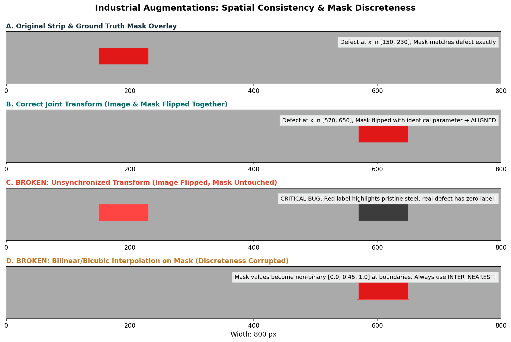

Industrial Augmentations: Geometric Alignment and Photometric Invariance
Data augmentation is one of the most effective techniques for preventing neural networks from overfitting to training data. By synthetically expanding the variety of training samples, augmentations teach your model which variations represent meaningless noise and which represent genuine visual patterns.
However, in semantic segmentation of industrial materials, data augmentation introduces critical failure modes that do not exist in standard image classification. If an augmentation transforms an image without transforming its corresponding mask identically, or if an interpolation algorithm blurs discrete defect boundaries, your model will be trained on corrupted labels.
This guide explores the physics of industrial line-scan imagery, separates geometric from photometric transformations, and demonstrates how to guarantee strict spatial alignment between images and masks.
1. Motivation: Domain Invariances in Line-Scan Imaging
When training a model to detect defects on cold-rolled steel strips, consider the physical mechanics of the production line:
Direction of Rolling (Conveyor Translation) ──────────────────────────►
┌───────────────────────────────────────────────────────────────────────┐
│ │ Top Strip Edge
│ ≈≈≈≈≈ Longitudinal Roll Scratch ≈≈≈≈≈ │
│ ● Staining Cluster │
│ │ Bottom Strip Edge
└───────────────────────────────────────────────────────────────────────┘- Longitudinal Translation Invariance: A roll scratch occurring at column \(x=150\) is physically identical in nature to a scratch occurring at column \(x=650\). The defect's nature does not depend on its position along the conveyor.
- Transverse Edge Invariance: The top edge and bottom edge of the strip experience similar thermal and mechanical stresses. A defect appearing near the top boundary could just as plausibly appear near the bottom boundary.
- Lighting & Surface Finish Variability: Minor fluctuations in factory ambient lighting, coil surface reflectivity, or sensor exposure alter pixel brightness and contrast without altering defect morphology.
An effective augmentation pipeline injects these realistic physical variations while strictly respecting sensor constraints.
2. Categorizing Augmentations: Geometric vs. Photometric
Augmentations must be strictly divided into two distinct mathematical categories:
┌─────────────────────────────────────────┐
│ Augmentation Pipeline │
└────────────────────┬────────────────────┘
│
┌──────────────────────┴──────────────────────┐
▼ ▼
┌───────────────────────────┐ ┌───────────────────────────┐
│ Geometric Transforms │ │ Photometric Transforms │
├───────────────────────────┤ ├───────────────────────────┤
│ • Horizontal Flip (p=0.5) │ │ • Contrast Adjust (γ, α) │
│ • Vertical Flip (p=0.5) │ │ • Brightness Jitter │
│ • Shifts / Small Crops │ │ • Gaussian Sensor Noise │
├───────────────────────────┤ ├───────────────────────────┤
│ APPLIED TO: │ │ APPLIED TO: │
│ Image AND Mask Identically│ │ Image ONLY! │
└───────────────────────────┘ └───────────────────────────┘1. Geometric Transforms (Dual Transformation)
Geometric transforms alter spatial pixel coordinates \((x, y) \mapsto (x', y')\).
- Examples: Horizontal flip, vertical flip, horizontal translation.
-
Rule: Whenever coordinates are shifted, reflected, or cropped, the exact same coordinate mapping must be applied to every channel of the mask:
\[\mathbf{X}_{\text{aug}} = T_{\text{geom}}(\mathbf{X}), \quad \mathbf{Y}_{\text{aug}} = T_{\text{geom}}(\mathbf{Y})\]
2. Photometric Transforms (Image-Only Transformation)
Photometric transforms alter pixel intensity values \(I(x, y) \mapsto f(I(x, y))\) while leaving spatial coordinates unchanged.
- Examples: Random brightness, contrast adjustment, gamma correction, Gaussian noise.
- Rule: Intensity changes must be applied exclusively to the image. Applying a brightness adjustment or contrast curve to a binary mask corrupts ground-truth \(\{0.0, 1.0\}\) indicator values into invalid, meaningless floats!
3. Physical Plausibility of Transforms on Industrial Strips
Not every transformation that works on ImageNet natural images is physically sound for industrial line-scan strips.
| Transformation | Physical Validity on \(128 \times 800\) Strips | Rationale |
|---|---|---|
Horizontal Flip (p=0.5) |
Highly Plausible | Steel coils can be inspected moving forward or backward; reflection along the rolling axis preserves strip geometry and scratch orientation. |
Vertical Flip (p=0.5) |
Plausible | Inverts the top and bottom edges of the strip. Defect formation physics are largely symmetric across the sheet width. |
| \(90^\circ\) or \(270^\circ\) Rotation | INVALID | Rotating by \(90^\circ\) produces an \(800 \times 128\) image. Industrial line-scan cameras have fixed mounting geometries; strips never travel sideways. |
| Square Resize (\(256 \times 256\)) | HARMFUL | Crushes the natural \(6.25:1\) aspect ratio, compressing width by \(3.125\times\) while expanding height by \(2.0\times\). Fine longitudinal cracks are obliterated by aliasing. |
| Arbitrary Continuous Rotation | Questionable | Rotating by arbitrary angles (e.g., \(15^\circ\)) introduces large black boundary triangles on wide strips and requires interpolation. |
4. Mask Discreteness and the Interpolation Hazard
When an augmentation library scales, rotates, or shifts an image, it must compute pixel values at fractional coordinate locations \((x + \delta x, y + \delta y)\) using interpolation.
Input Image (Continuous Float) ──────► Bilinear / Bicubic Interpolation (Smooth)
Input Mask (Discrete Binary) ──────► NEAREST NEIGHBOR ONLY! (Preserves {0, 1})The Bilinear Mask Bug
Bilinear interpolation calculates a weighted average of four neighboring pixels:
If applied to a binary mask where neighboring pixels are 0 and 1, bilinear interpolation produces fractional edge values:
A binary ground truth mask must represent a deterministic binary statement: defect is present (1) or defect is absent (0). Fractional values corrupt cross-entropy and Dice loss calculations.
Crucial Rule: Always specify
interpolation=cv2.INTER_NEAREST(orcv2.INTER_NEAREST_EXACT) for segmentation masks. For input images, usecv2.INTER_LINEARorcv2.INTER_CUBIC.
5. Visual Bug Diagnosis: Aligned vs. Broken Augmentations
Observe the visual contrast between a correctly synchronized augmentation and two standard augmentation bugs:

Figure 3.1: Visual alignment diagnosis. (A) Original image with defect mask. (B) Correct joint horizontal flip: image and mask flipped together. (C) Broken unsynchronized flip: image flipped but mask untouched, highlighting pristine steel. (D) Broken interpolation: bilinear filtering blurs mask boundaries.Why the Unsynchronized Bug (Figure 3.1 C) Destroys Models:
When the image is flipped horizontally but the mask is left unflipped:
- The network sees visual defect features on the right side of the image, but the target mask tells the network that the label there is 0 (pristine background).
- The target mask tells the network that there is a defect on the left side, where the visual pixels show completely clean steel.
- The loss function severely penalizes the network when it correctly detects the defect, while forcing it to hallucinate anomalies on clean steel. Training diverges.
6. Implementation Pattern: Dual Augmentation
When building your augmentation pipeline (whether using Albumentations or custom NumPy functions), ensure that random decisions are shared between image and mask:
import numpy as np
import cv2
def apply_industrial_augmentations(
image: np.ndarray, # Shape: (128, 800), uint8
masks: np.ndarray, # Shape: (4, 128, 800), float32
hflip_prob: float = 0.5,
vflip_prob: float = 0.5,
) -> tuple[np.ndarray, np.ndarray]:
"""Apply synchronized geometric flips and image-only photometric augmentations."""
# 1. Synchronized Horizontal Flip
if np.random.rand() < hflip_prob:
image = np.fliplr(image)
masks = np.flip(masks, axis=2) # Flip along width axis (axis 2 of [C, H, W])
# 2. Synchronized Vertical Flip
if np.random.rand() < vflip_prob:
image = np.flipud(image)
masks = np.flip(masks, axis=1) # Flip along height axis (axis 1 of [C, H, W])
# 3. Photometric Augmentations (Applied to IMAGE ONLY)
# Example: Random Contrast Adjustment (gamma scaling)
if np.random.rand() < 0.3:
gamma = np.random.uniform(0.8, 1.2)
# Intensity mapping on image only
inv_gamma = 1.0 / gamma
table = np.array([((i / 255.0) ** inv_gamma) * 255 for i in range(256)]).astype("uint8")
image = cv2.LUT(image, table)
# 4. Strict Safety Assertions
assert image.shape == (128, 800), "Image shape altered by augmentation!"
assert masks.shape == (4, 128, 800), "Mask shape altered by augmentation!"
assert np.all(np.isin(masks, [0.0, 1.0])), "Mask values corrupted by interpolation!"
return np.ascontiguousarray(image), np.ascontiguousarray(masks)7. Common Mistakes and Diagnostics
| Bug / Pitfall | Root Cause | Observable Symptom | Practical Diagnostic |
|---|---|---|---|
| Independent Random Flips | Calling RandomHorizontalFlip on image and mask in separate calls. |
Mask overlays appear on wrong side in 50% of augmented batches. | Plot augmented image with overlaid mask using matplotlib; verify visual alignment. |
| Mask Value Blurring | Using default bilinear interpolation in Albumentations or torchvision. | masks.max() is 1.0, but unique() contains floats like \(0.15, 0.43\). |
Assert np.all(np.isin(masks, [0.0, 1.0])). |
| Photometric Distortion of Masks | Passing masks into brightness or Gaussian noise functions. | Masks become noisy floating-point fields. | Verify that photometric transforms receive only image=.... |
| Aspect Ratio Distortion | Using square resize (e.g., \(256 \times 256\) or \(512 \times 512\)). | Longitudinal scratches widen unnaturally; spatial aliasing degrades thin defects. | Preserve native \(128 \times 800\) canvas throughout preprocessing. |
8. Decisions You Must Make
- Augmentation Probability Budget: Aggressive augmentations regularize models but can slow training convergence if applied excessively.
- Start conservatively: \(p_{\text{hflip}} = 0.5\), \(p_{\text{vflip}} = 0.5\).
- Introduce subtle photometric adjustments (brightness \(\pm 10\%\), contrast \(\pm 15\%\)) only after your baseline achieves steady training convergence.
- Validation Integrity: Never apply augmentations to your validation partition. Validation must evaluate deterministic, uncorrupted ground truth images to provide reliable, reproducible benchmark scores across epochs.
9. Try It: Verify Dual Transform Consistency
Run this diagnostic snippet to verify that your augmentation helper maintains spatial alignment and preserves mask discreteness:
import numpy as np
# 1. Create a toy 128x800 strip with a defect at x in [100, 200]
toy_img = np.full((128, 800), 180, dtype=np.uint8)
toy_img[40:80, 100:200] = 50 # Dark defect
toy_masks = np.zeros((4, 128, 800), dtype=np.float32)
toy_masks[0, 40:80, 100:200] = 1.0 # Channel 0 defect_a
# 2. Apply horizontal reflection
flipped_img = np.fliplr(toy_img)
flipped_masks = np.flip(toy_masks, axis=2)
# 3. Check where the defect relocated
# Original: x in [100, 200) -> Width=800 -> Flipped: x in [800 - 200, 800 - 100) = [600, 700)
assert flipped_img[50, 650] == 50, "Image defect not at expected flipped location!"
assert flipped_masks[0, 50, 650] == 1.0, "Mask defect not aligned with flipped image!"
assert flipped_masks[0, 50, 150] == 0.0, "Old mask location should now be 0!"
assert np.all(np.isin(flipped_masks, [0.0, 1.0])), "Mask values corrupted!"
print("✓ Dual horizontal flip alignment and discreteness verified successfully!")10. Authoritative Documentation & References
- Albumentations Documentation: Albumentations for Semantic Segmentation
- PyTorch
torchvision.transforms.v2: Transforms v2 API (Image & Mask Alignment) - OpenCV Geometric Transformations & Interpolation: OpenCV Geometric Transforms